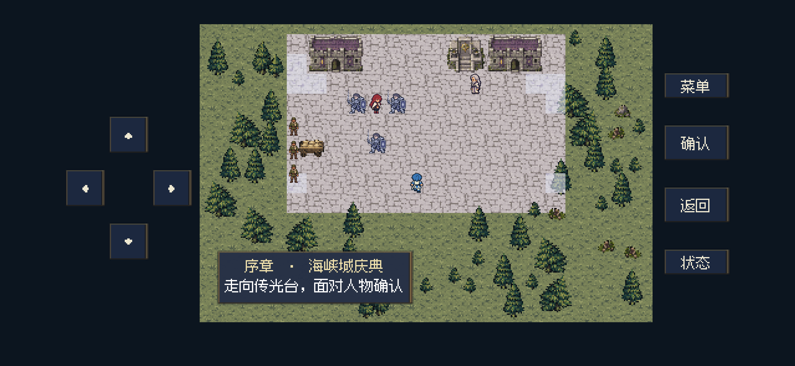

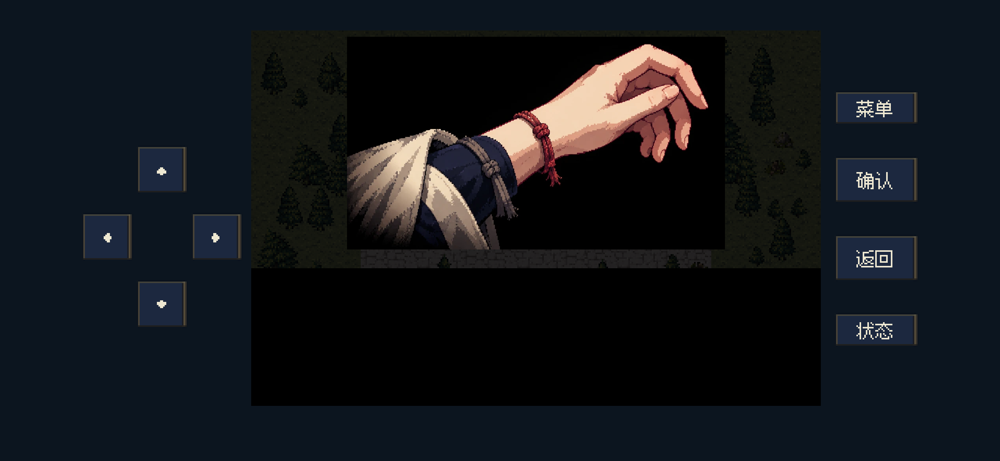

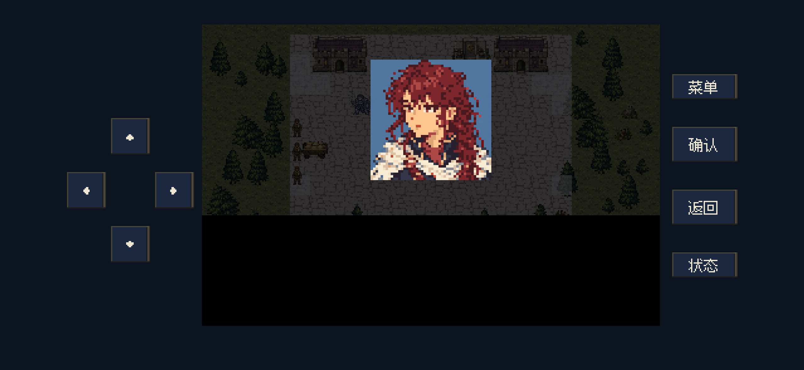

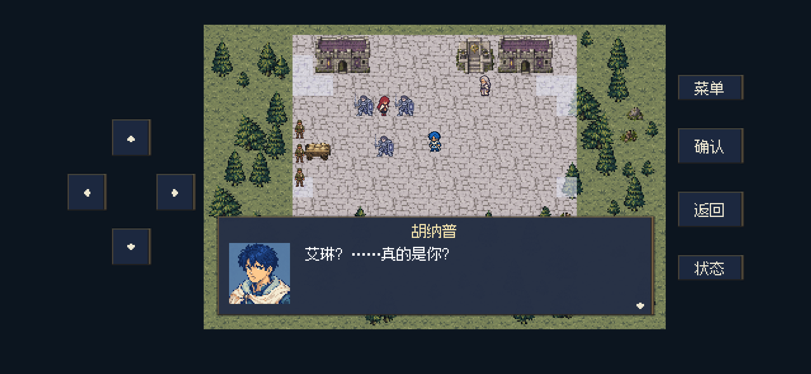


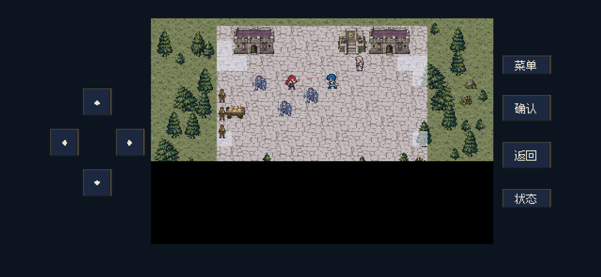


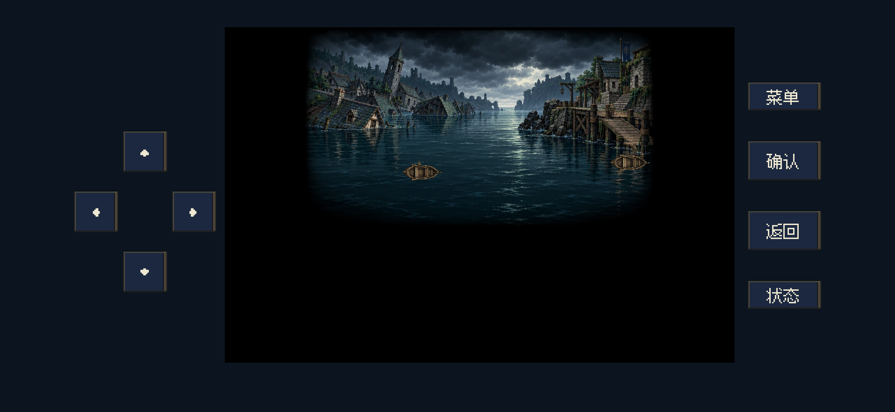


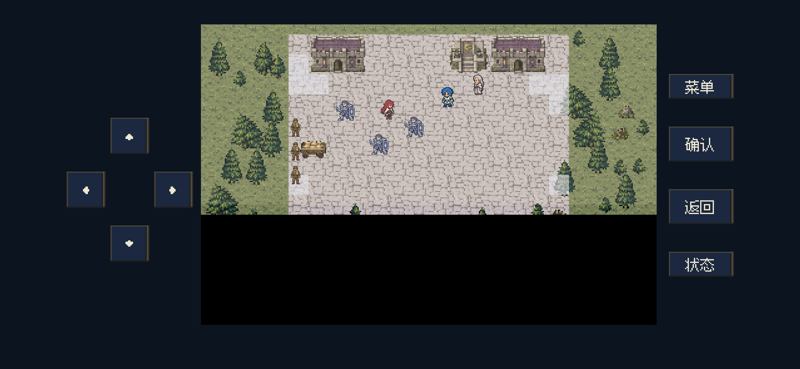

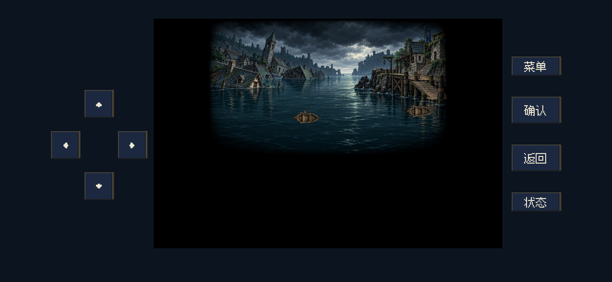


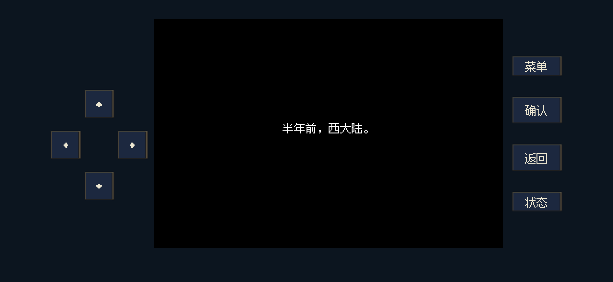

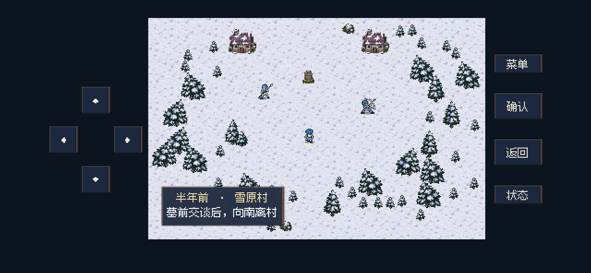
这是电脑上 Godot 按手机布局后台渲染的游戏画面，不是 iPhone 真机录屏。
2026-10-26 · 最新优化：入场与剧情动作统一小体型，每位角色8帧；赫兰重新生成修长轮廓，三名士兵换为现有蓝紫色壁垒卫士。未导出或更新 iPhone。
序章开发验证：304 项逻辑检查 + 389 项后台呈现检查通过本轮体型与动作：200项后台定向检查及68项无窗口素材检查通过，覆盖24帧的真实尺寸、完整轮廓、脚点、三名壁垒卫士、挡击接触点、D31和两种手机布局。后续右上角小图继续移除，保留前面的独立东群岛切镜。
实际游戏引擎视口按30FPS逐帧渲染，确认键在每页文字读完后自动按下；不是手持真机录像。预览音轨按运行时音效触发日志，使用游戏相同的序章音乐、火球、碰撞与显形音效离线合成。没有生成角色配音；未作人耳试听声明。
场景先呈现艾琳已被押到传光台旁、赫兰准备表彰胡纳普。玩家面对艾琳或赫兰确认，进入同一场 D00；动作段暂停自由操作并收起对话框，演出说明不出现在对白中。










对白沿用当前修订稿的顺序与原句（“先停手。”）。旧版重复押解说明、旧“胡纳普挡住法术……”旁白，以及“她来自同一个世界的另一岸”解释均已移除。神幕只呈现当下正在进行的撤离与两岸日光差别。
| 序号 | 人物 | 台词 |
|---|---|---|
| 1 | 胡纳普 | 艾琳？……真的是你？ |
| 2 | 艾琳 | 胡纳普…… |
| 3 | 胡纳普 | 放开她！ |
| 4 | 赫兰 | 胡纳普，她拆了传光台的封印。 |
| 5 | 艾琳 | 让开！赫兰，停下仪式！ |
| 6 | 艾琳 | 胡纳普，为什么护着他？ |
| 7 | 胡纳普 | 艾琳，你这是做什么？ |
| 8 | 艾琳 | 他要把船上的人送回海上！ |
| 9 | 赫兰 | 我已经让人安置他们。 |
| 10 | 胡纳普 | 那是哪里？ |
| 11 | 艾琳 | 东群岛！他们还没撤出来！ |
| 12 | 胡纳普 | 先停手。 |
现行完整台词汇总 · 现行原文核对数据 · 修改前的运行对白
演出仍保存在原有 hub 记录中，保留当前镜头、时间和已触发的音效。各镜头的保存／读取已核对；人物对白、阻挡后、撤离与转场字幕四类断点通过实际界面续读。旧版线性 D00 的中途记录会从新相认镜头重新进入，保留队伍和进度。演出不会改动生命、物品、战斗单位或招募，也不会提前完成雪原村墓前事件。
D31 开头已按修订稿同步；回到相同的伸手与回望姿势，之后接回既有第三章流程。后续广场对白、伸手停点及D31均不叠加右上角东群岛小图。
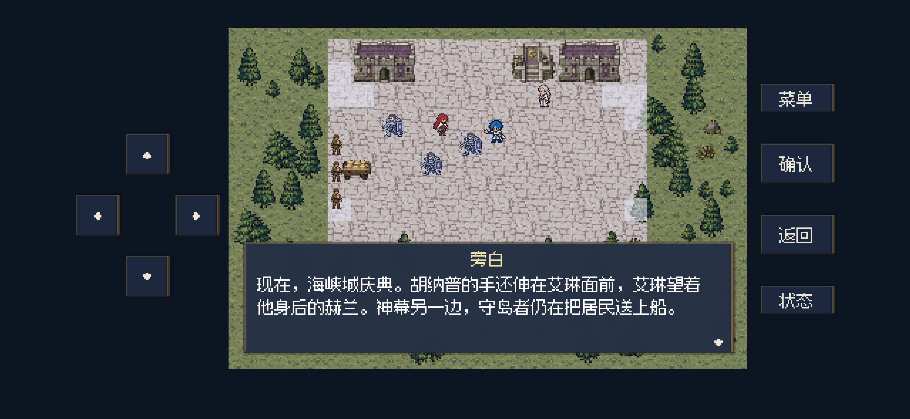
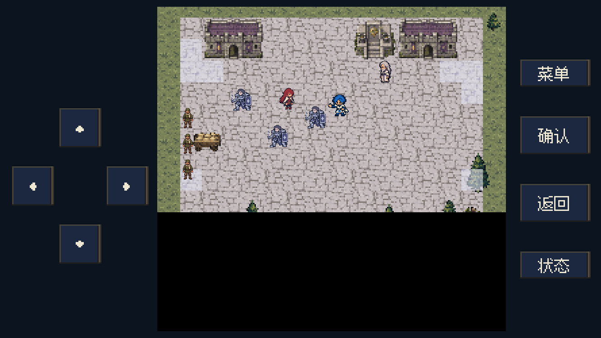
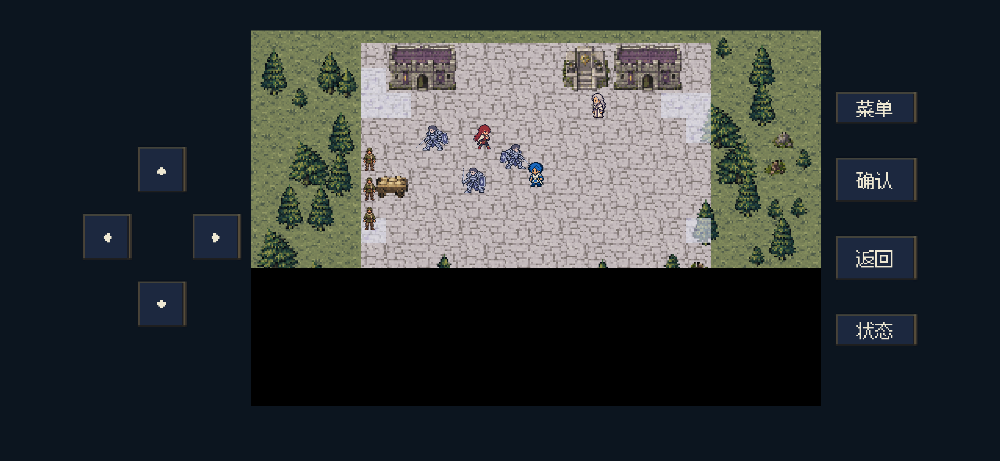

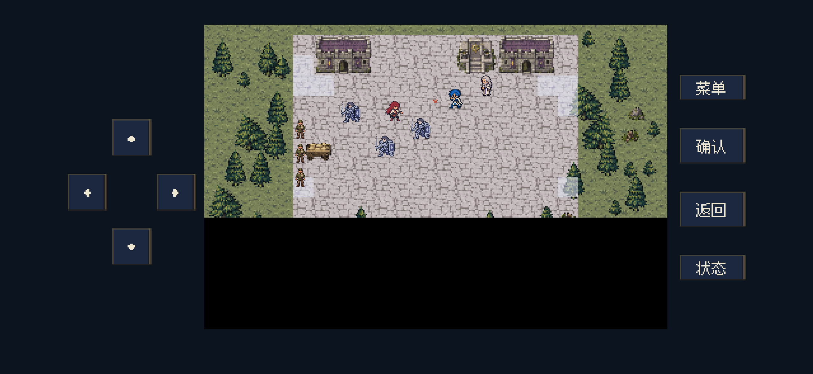
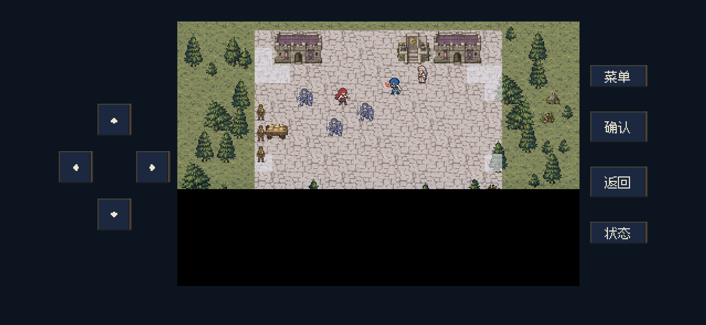
三位人物统一约16逻辑像素的小地图身高，胡纳普以小体型抬臂挡击，每位人物各有8帧实际绘制姿势，起步、抬手、接触与收势按时间衔接。赫兰重新生成窄肩、收拢披肩和直垂袍摆，站立宽度约为此前的78%，身高保持一致。三名守卫复用现有敌方壁垒卫士（职业22）的蓝紫色待机／步行图，演出中保留第三名卫士。
新图由内置 imagegen 制作；本轮源图和完整提示词保存在 source/prologue-small-20261026，运行采用独立优化副本。人物图集均小于20KB，按脚点统一对齐。检查深浅底透明边缘、手机布局中的比例和完整轮廓。
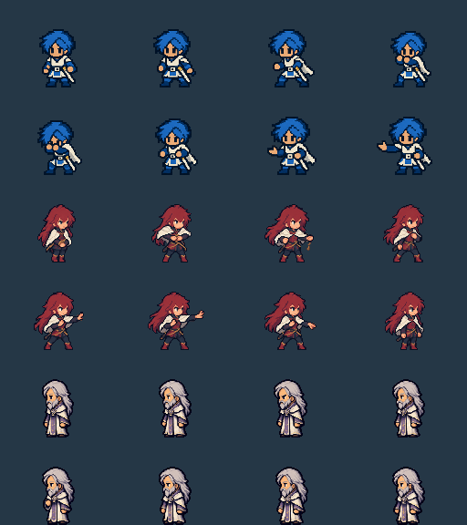
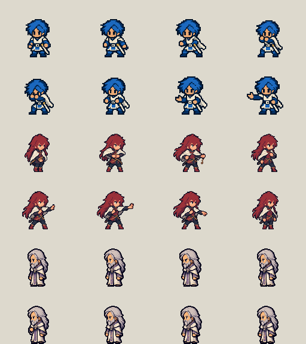
| 运行素材 | 像素尺寸 | 实际字节数 |
|---|---|---|
| wrist-knot.webp | 959×540 | 48,506 B |
| east-evacuation.webp | 959×540 | 129,676 B |
| rowboat.png | 48×32 | 941 B |
| hunapu.png | 512×192 | 17,059 B |
| eileen.png | 512×192 | 16,057 B |
| herlan-slim.png | 512×192 | 15,483 B |
初始提示词与来源 · 小体型与修长赫兰的完整提示词 · 24帧小地图人物清单与用途 · 逐图尺寸、字节与压缩理由
检查覆盖两处真实确认入口、12句完整对白、动作不可被确认键跳过、自由操作冻结、一次施法与一次阻挡、实时船只和登船、独立转场字幕、角色数据保持、镜头断点及旧D00续读、D31接续和两种手机布局的完整文字安全区。新增的镜头存档字段会校验类型、范围、有限数值和音效标记，异常数据不会进入运行状态。本轮没有重玩40关或执行iPhone真机触摸测试。
逻辑结果 · 后台呈现结果 · 逐帧演出与声音触发日志 · 定向检查脚本
旧 round1 脚本曾按7句D00和旧首关7／9名敌兵断言。本轮将相关D00断言同步为12句；首关兵力与援军的三个旧断言涉及此前已经变更的部署，本轮未改动兵力，未将该脚本宣称为全量回归通过。保留最初观察记录，并恢复了该旧脚本写出的报告样本。
全部图形进程均在启动前加载已验证的防激活／防窗口显示保护，使用引擎视口离屏捕获。测试记录仅写入独立临时目录。